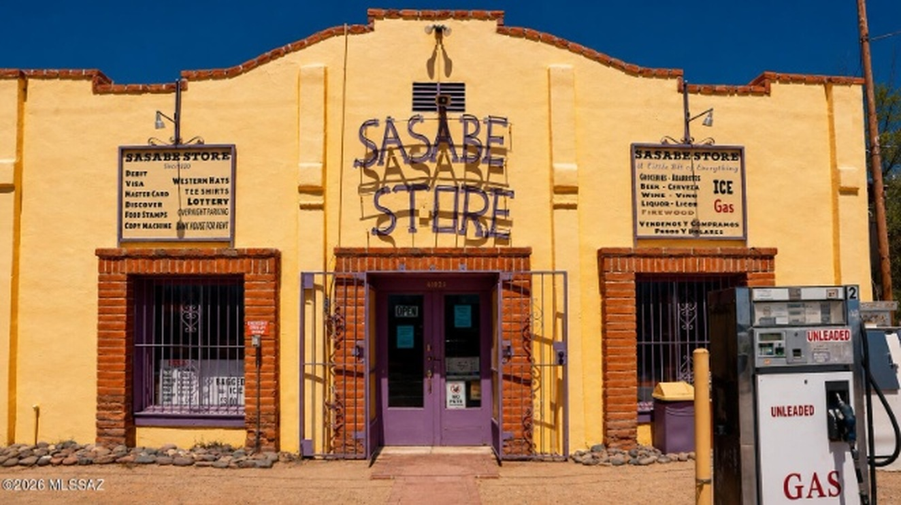

Drive south through the Altar Valley on State Route 286 and the road gets quieter the farther you go. For most of the drive, the landscape is wide open—grassland, ranch country, washes, and mountain views—with very little visible development along the highway. Eventually, the road reaches Sasabe, Arizona, right on the U.S.–Mexico border.
There isn't much of a town in the conventional sense. Sasabe has a general store, a post office, a historic border station, nearby ranches, and only a handful of people living in the settlement itself. At the time of this article, the number appears to be roughly four year-round residents—an approximate current count, not an official Census population.
But Sasabe has far more history than its size would suggest. Ranching, cross-border travel, historic guest ranches, old transportation routes, wildlife conservation, and generations of life in the Arizona–Sonora borderlands all come together here.
Sasabe is small. Its story isn't.
Where Is Sasabe, Arizona?
Sasabe is in southern Pima County, directly on the U.S.–Mexico border.
From Tucson, the primary route runs west toward Three Points and then south on State Route 286. From its junction with State Route 86 near Three Points, SR 286 travels approximately 45 miles through the Altar Valley before reaching Sasabe and the international boundary.
The farther south you go, the more remote the drive feels. State Route 286 runs through miles of open grassland, ranch country, washes, and mountain views, with very little visible development along the way. The Baboquivari Mountains rise west of the highway, and much of the route passes through or alongside Buenos Aires National Wildlife Refuge.
Sasabe sits at approximately 3,500 feet in elevation, about 1,000 feet higher than the northern end of SR 286 near Three Points.
And unlike Arizona border communities such as Nogales or Douglas, there is no sizeable American city at the end of the highway.
There is Sasabe.
The Sasabe Store

If Sasabe has a recognizable center, the Sasabe Store is part of it.
The little town center includes the Sasabe Store, Hilltop Bar and the post office. The store occupies a building dating to around 1920.
For a remote ranching community, a general store has historically meant more than a place to grab a drink or a snack.
It served local residents, ranch workers, travelers, hunters and people moving through the border country. In a place where the next sizeable commercial area is many miles away, the store became one of the community's most recognizable landmarks.
Even today, its old-fashioned storefront and two gas pumps look like something from an earlier Arizona.
But they're not sitting in a museum.
They're still in Sasabe.
Sasabe Was Once Known as San Fernando
Sasabe hasn't always gone by the name people know today.
Historical records show the community was known as San Fernando during part of the twentieth century. Historical records also identify the San Fernando School District in Sasabe.
The origin of the word "Sasabe" itself is less certain.
Different historical sources have recorded variations of the name and explanations of its origin. Rather than turning one of those explanations into a fact without strong linguistic evidence, it is better to recognize Sasabe as an older regional place name whose history reaches beyond the modern American community.
The Border Crossing Has Been Here for More Than a Century
The border has shaped Sasabe for more than a century.
A border crossing has existed at Sasabe since 1916.
The historic red-brick U.S. inspection station was constructed in 1937 and is listed on the National Register of Historic Places.
That building gives the crossing an appearance very different from the enormous commercial ports found elsewhere along the Arizona-Sonora border.
Historically, Sasabe has also been Arizona's smallest land port of entry.
The port is a reminder of one of the strangest things about Sasabe: an American settlement with only a few residents has maintained a direct international connection with Mexico for more than a century.
Sasabe, Arizona and El Sásabe, Sonora
Cross the international boundary and the picture changes.
Sasabe on the Arizona side and the community on the Sonora side are separate places, but their histories are intertwined.
The Mexican community is substantially larger.
For generations, this has been a borderland rather than two communities existing in complete isolation.
Ranching, commerce, families, travelers and everyday life have crossed the international boundary. That relationship helps explain why looking only at the tiny American population gives an incomplete picture of Sasabe.
Ranching Country
Ranching is woven deeply into the history of the region.
Long before SR 286 was a paved state highway, people traveled this corridor through the Altar Valley.
Historical accounts describe trails used by Indigenous people and Jesuit missionaries in the eighteenth century, followed in later periods by Spanish land grantees and American cattle ranchers. Pima County maintained the road before it entered Arizona's state highway system in 1955.
The road still serves ranches today.
And some of the ranches surrounding Sasabe have histories almost as remarkable as the town itself.
Rancho de la Osa
Near Sasabe sits Rancho de la Osa, one of Southern Arizona's best-known historic guest ranches.
The property's history reaches back long before Arizona became a state.
Accounts of the site connect it to Tohono O'odham history and Spanish missionary activity in the region. The ranch later became part of the cattle-ranching culture that shaped the borderlands.
By the 1920s, Rancho de la Osa was welcoming guests.
Over the decades, the ranch became associated with prominent politicians, writers and Hollywood figures.
The remarkable thing is that this history isn't attached to a distant ruin.
Rancho de la Osa remains part of the Sasabe landscape.
Elkhorn Ranch
Another longstanding guest ranch lies west of SR 286.
Elkhorn Ranch became part of the modern dude-ranch tradition in the mid-twentieth century, adding another chapter to the area's relationship with ranching and Western tourism.
Together, ranches like Rancho de la Osa and Elkhorn help explain something that isn't obvious from looking at Sasabe's present population.
Sasabe has always been connected to a much larger rural landscape.
The Altar Valley
That landscape is the Altar Valley.
The valley stretches north from the Sasabe area toward Three Points, framed by mountain ranges and crossed by washes and drainage systems.
This is not simply the stereotypical Arizona landscape of saguaros and bare desert.
Large portions are semidesert grassland.
For generations, water has helped determine what can happen here. Ranching depends on wells, springs, stock tanks and other water sources. Monsoon storms can transform normally dry washes. Wildlife depends on the same landscape.
The result is a region where ranching, water, wildlife, conservation and land management are constantly connected.
Buenos Aires National Wildlife Refuge
Just north of Sasabe lies one of the largest protected landscapes in this part of Southern Arizona.
Buenos Aires National Wildlife Refuge encompasses roughly 117,000 acres of grassland and other habitat along the SR 286 corridor.
The refuge was established in 1985, with restoration of habitat for the endangered masked bobwhite among its central purposes.
The refuge protects semidesert grassland as well as wetlands and riparian habitat.
It also helps explain why the drive to Sasabe feels so undeveloped.
Instead of continuous subdivisions and commercial development, travelers encounter huge expanses of open country.
The refuge attracts birders, wildlife watchers and other visitors, but its significance goes well beyond recreation. It preserves a substantial piece of the grassland ecosystem that historically characterized much of the Altar Valley.
San Fernando School
Sasabe still has a school named San Fernando School.
The small school serves students from the surrounding rural area and is one of the community institutions that continues to operate in Sasabe today. Its location just north of the international border also gives it a close connection to the Arizona–Sonora borderlands.
That connection shows up in the school's own records. San Fernando Elementary School District is classified as rural, operates one school, and has historically had a high percentage of English-language learners. The school's student handbook even includes specific rules for students who intend to visit the other side of the border after school.
The school's name also connects Sasabe today with an earlier period when the community itself was known as San Fernando. Historical Arizona education records document the San Fernando School District No. 35 in Sasabe.
In a place this small, the continued presence of San Fernando School is another reminder that Sasabe is a living community, not simply a collection of historic buildings at the end of the highway.
The Post Office
Sasabe still has a United States Post Office and its own ZIP code: 85633.
In a community this small, that is notable by itself.
Historically, the post office was part of the small commercial center around the Sasabe Store and Hilltop Bar.
The post office, store and border station give Sasabe something that many nearly abandoned settlements no longer have:
continuity.
People still receive mail here. Travelers still arrive here. Ranches still operate around it. The international boundary still passes directly through its story.
Is Sasabe a Ghost Town?
Not quite.
Arizona has plenty of true ghost towns—places where mines closed, businesses disappeared and residents left until little more than ruins remained.
Sasabe is different.
It is extraordinarily small, but it is still inhabited.
The store remains. The post office remains. The international port remains. Historic buildings remain. Ranches continue operating across the surrounding countryside.
So "ghost town" doesn't really describe Sasabe.
A better description might be a surviving rural border community.
It is a place that became much smaller without entirely disappearing.
State Route 286
Today, almost everyone arriving from the Arizona side reaches Sasabe the same way: SR 286.
But the highway is part of the story rather than merely directions to it.
The route follows a much older travel corridor. Indigenous people traveled through the region long before modern roads existed. Jesuit missionaries followed trails through the area in the eighteenth century. Ranchers later used the corridor to move people, supplies and livestock.
Pima County maintained the road before it became part of the state highway system in 1955.
Today it remains a lightly traveled two-lane highway through some of the least developed country in Pima County.
At its southern end, the pavement reaches Sasabe.
Then Arizona ends.
What Is Sasabe Like Today?
Sasabe does not feel like a normal small town.
There isn't a conventional downtown filled with shops and restaurants. There aren't subdivisions stretching into the desert. There aren't traffic lights and shopping centers.
Still, there is more here than its size would lead you to expect.
There is a general store that has stood for more than a century.
There is a post office.
There is a historic border crossing whose history reaches back to 1916.
There are working and historic ranches scattered through the surrounding country.
There are the Baboquivari Mountains on the horizon and more than 100,000 acres of wildlife refuge nearby.
There is a larger Mexican community immediately across the international boundary.
And there are traces of an older Sasabe—school records, historic buildings, ranching routes, and stories of the people who have lived in this remote corner of Arizona over the years.
Part of Sasabe Is Currently for Sale
There is another unusual chapter unfolding in Sasabe today: a substantial portion of the community is currently being offered for sale.
The offering includes approximately 441 acres across multiple parcels, along with several recognizable parts of Sasabe, including the Sasabe Store, the U.S. Post Office property, and the Hilltop Bar.
It is a rare opportunity to acquire a significant amount of land and property in one of Arizona's smallest border communities.
For details, visit OwnSasabe.com.
Frequently Asked Questions
Where is Sasabe, Arizona?
Sasabe is in southern Pima County on the U.S.–Mexico border. State Route 286 connects it with State Route 86 near Three Points, approximately 45 miles to the north.
How many people live in Sasabe?
The settlement itself appears to have only a handful of permanent residents today—roughly four at the time of this article. That is an approximate current description, not an official Census population.
Is Sasabe a ghost town?
No. Although its population is extremely small, Sasabe remains inhabited and retains a store, post office, border facilities and surrounding ranch activity.
Was Sasabe called San Fernando?
Yes. Historical sources document San Fernando as an earlier name associated with the community, and the name is still used by San Fernando School in Sasabe today.
Is Sasabe on the Mexican border?
Yes. Sasabe sits directly on the international boundary between Arizona and Sonora.
How old is the Sasabe border crossing?
A border crossing has existed at Sasabe since 1916. The historic red-brick inspection station dates to 1937.
What is across the border from Sasabe?
The community of El Sásabe in Sonora, Mexico, lies on the other side of the international boundary. The Mexican community is considerably larger than Sasabe on the Arizona side.
What is near Sasabe?
The surrounding region includes Buenos Aires National Wildlife Refuge, historic and working ranches, the Altar Valley, the Baboquivari Mountains and rural routes connecting toward Arivaca and Three Points.
What is Rancho de la Osa?
Rancho de la Osa is a historic ranch near Sasabe with roots extending back through the area's ranching and Spanish-era history. It became a guest ranch in the 1920s and has hosted numerous prominent guests over the decades.
Sasabe Is Small. Its Story Isn't.
If Sasabe were judged only by its current population, it would be easy to dismiss it as a few buildings at the end of a highway.
But that's not really Sasabe.
This tiny community sits at the meeting point of Arizona and Sonora, ranching and conservation, grasslands and mountains, old travel routes and an international border.
A border crossing has existed here for more than a century. A historic general store still marks the center of town. San Fernando School still carries one of the town's historic names. Guest ranches nearby became part of Arizona's Western history. More than 100,000 acres of wildlife refuge now protect much of the landscape north of town.
Sasabe is one of those places where the size of the town and the size of its story have almost nothing to do with each other.
This article is provided for general informational and educational purposes. Historical details are compiled from public and historical sources and, while believed to be accurate, are not guaranteed and should be independently verified. This article is not intended as legal, financial, or investment advice.